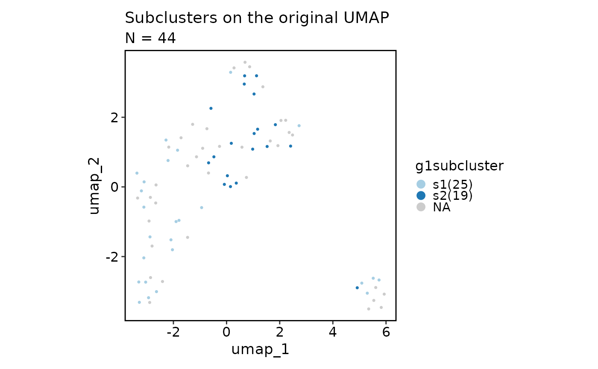
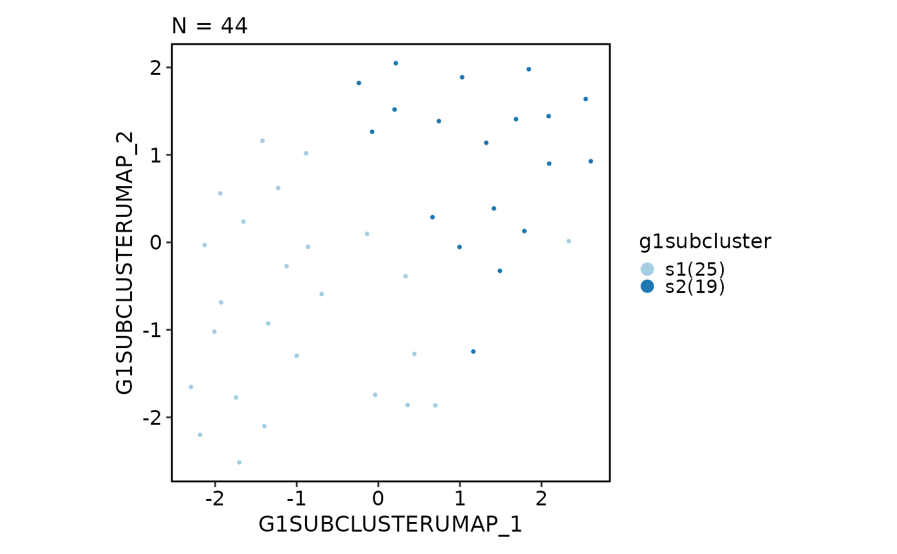

Run subset clustering on a Seurat object
RunSeuratSubClustering.RdIt's unlike Seurat::FindSubCluster, which only finds subclusters of a single
cluster. Instead, it will perform the whole clustering procedure on the subset of
cells. One can use metadata to specify the subset of cells to perform clustering on.
Arguments
- object
Seurat object
- subset
A string of expression to pass to
dplyr::filterfunction to filter the cells.- name
Name of the run. It will be used as the prefix for the reduction name, keys and cluster names. For reduction keys, it will be
toupper(<name>)+ "PC_" andtoupper(<name>)+ "UMAP_". For cluster names, it will be<name>+ "." + resolution. And the final cluster name will be<name>. Default is "subcluster".- RunPCAArgs
Arguments to pass to
Seurat::RunPCA()- RunUMAPArgs
Arguments to pass to
Seurat::RunUMAP().RunUMAPArgs$featurescan be a character vector of features directly used for UMAP, or a list with the following fields:order: The order of the markers to use for UMAP, e.g. "desc(abs(avg_log2FC))"n: The number of total features to use for UMAP, e.g. 30 IfRunUMAPArgs$featuresis a list, it will runRunSeuratDEAnalysis()to get the markers for each group, and then select the topn/ngroupsfeatures for each group based on theorderfield.
- FindNeighborsArgs
Arguments to pass to
Seurat::FindNeighbors()- FindClustersArgs
Arguments to pass to
Seurat::FindClusters()- log
Logger
- cache
Directory to cache the results. Set to
FALSEto disable caching
Value
The original Seurat object (not the subsetted one) with the subclusters
results in @meta.data and @reductions.
Examples
# \donttest{
obj <- SeuratObject::pbmc_small
# Just run UMAP to compare with the subclusters
obj <- suppressMessages(Seurat::RunUMAP(obj, dims = 1:10))
#> Warning: The default method for RunUMAP has changed from calling Python UMAP via reticulate to the R-native UWOT using the cosine metric
#> To use Python UMAP via reticulate, set umap.method to 'umap-learn' and metric to 'correlation'
#> This message will be shown once per session
obj <- suppressWarnings(suppressMessages(RunSeuratSubClustering(
obj, subset = "groups == 'g1'", name = "g1subcluster"
)))
#> INFO [2025-08-05 16:43:29] Subsetting seurat object ...
#> INFO [2025-08-05 16:43:29] - Running RunPCA ...
#> INFO [2025-08-05 16:43:30] - Running FindNeighbors ...
#> INFO [2025-08-05 16:43:32] - Running FindClusters ...
#> INFO [2025-08-05 16:43:32] Using resolution(s): 0.8
#> Modularity Optimizer version 1.3.0 by Ludo Waltman and Nees Jan van Eck
#>
#> Number of nodes: 44
#> Number of edges: 946
#>
#> Running Louvain algorithm...
#> Maximum modularity in 10 random starts: 0.2121
#> Number of communities: 2
#> Elapsed time: 0 seconds
#> INFO [2025-08-05 16:43:32] Found subclusters (with resolution 0.8):
#> INFO [2025-08-05 16:43:32] | s1(25), s2(19)
#> INFO [2025-08-05 16:43:32] - Running RunUMAP ...
scplotter::CellDimPlot(
obj, reduction = "umap", group_by = "groups",
title = "UMAP of all cells",
subtitle = "groups = g1 will be subclustered"
)
scplotter::CellDimPlot(
obj, reduction = "umap", group_by = "g1subcluster",
title = "Subclusters on the original UMAP"
)

scplotter::CellDimPlot(obj,
reduction = "g1subcluster.umap", group_by = "g1subcluster"
)

# }